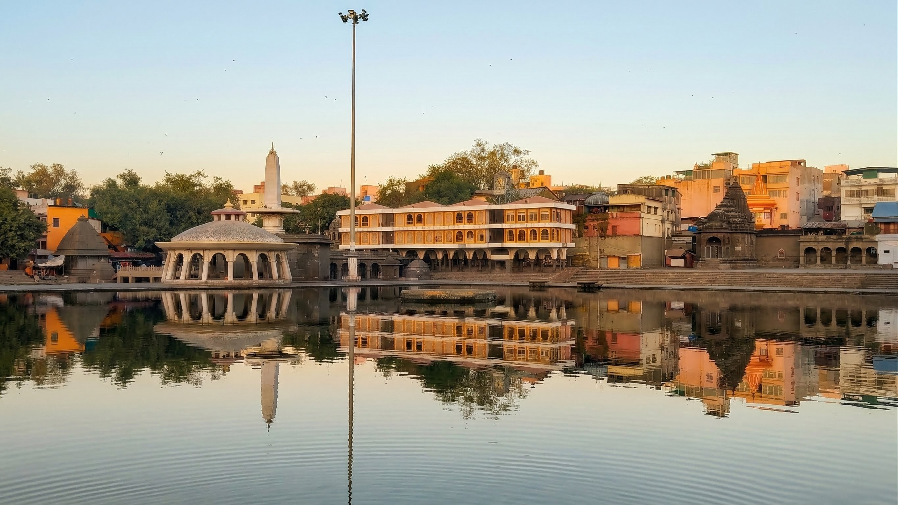
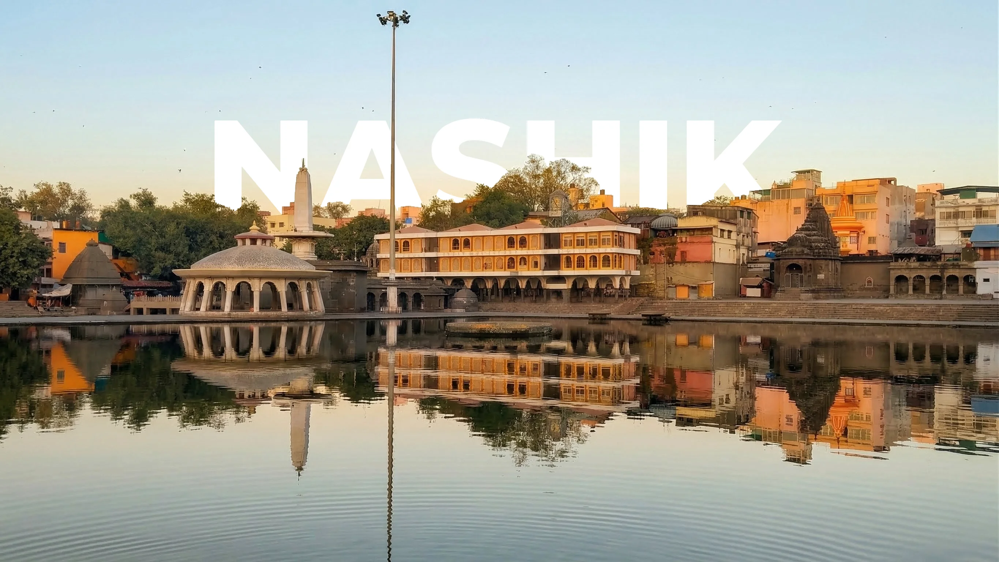
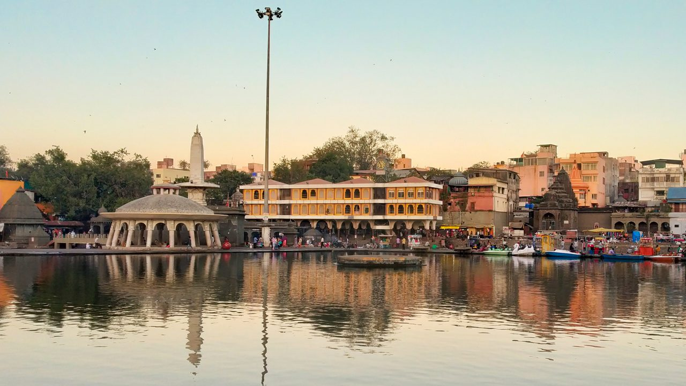
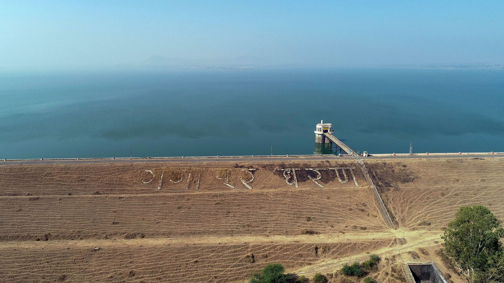
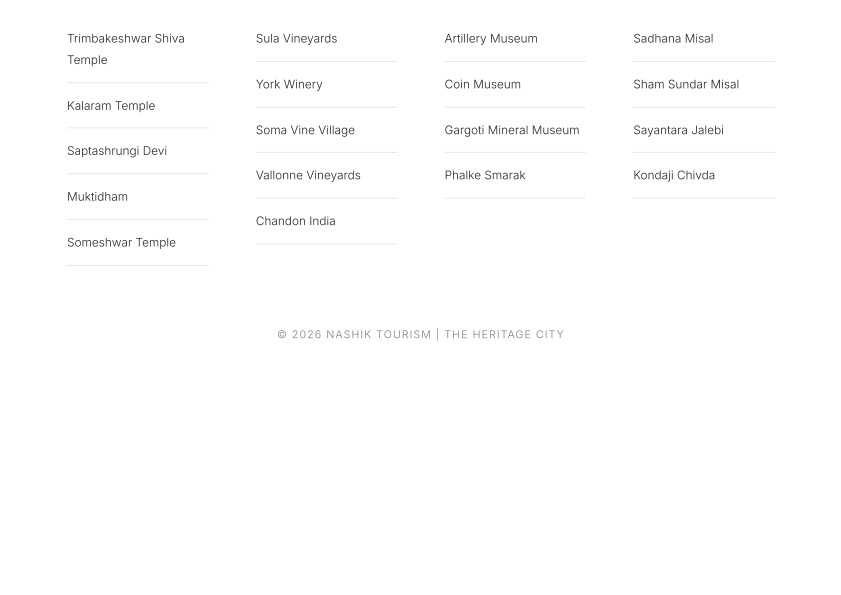
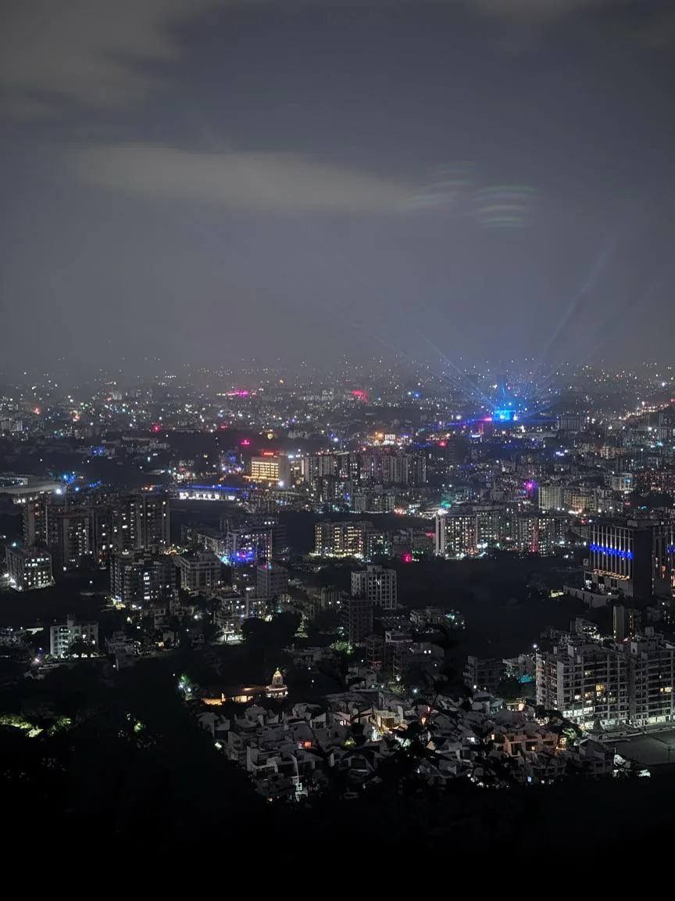

Ramkund & The Sacred Basin
Pilgrims gather on the black basalt steps of Ramkund at first light as temple bells from Naroshankar resonate across the Godavari.
Field Archive · Panchvati Basin
⧉ Expand
A curated visual chronicle of Nashik: dawn aartis on sacred basalt ghats, golden hour over misty vineyard slopes, 80-degree fortress stairways, and monsoon waterfalls cascading down the Sahyadri escarpments.

Pilgrims gather on the black basalt steps of Ramkund at first light as temple bells from Naroshankar resonate across the Godavari.

The rolling grape terraces of Gangapur Valley bathed in evening amber, bordered by the jagged volcanic silhouette of the Western Ghats.

The sacred perimeter of Panchvati, where five centuries-old banyan trees shelter ancient stone shrines near the Sita Gumpha caves.

Built in 1954 as an earthen embankment across the Godavari, the reservoir fills dramatically during July and August downpours.

Carved teakwood pillars and overhanging jharokhas of an 18th-century Maratha wada tucked inside the narrow lanes of Saraf Bazaar.

Heavy monsoon cumulus breaking over the city after a torrential downpour, revealing the fresh emerald ridges of Trirashmi Hills.

Brass lamps and marigold garlands drifting into the quiet waters of the Godavari before the city wakes to commercial activity.

Ripening Sauvignon Blanc bunches catch the warm winter backlight just weeks before the annual February crush.

Hand-carved basalt steps sculpted into a vertical volcanic chimney during the Yadava dynasty, accessible via finger-holds.

Basalt ghat steps built under Peshwa patron Gopikabai in the 1750s to stabilize the seasonal flooding of Dakshin Ganga.

Over 3,000mm of torrential rain creates ephemeral thundering cascades down the Kasara Ghat slopes outside Igatpuri.

Old town sweet shops, hot sabudana vada counters, and street-side halwais fry fresh jalebis in pure ghee after dusk.

Field workers inspect grape canopy health at dawn when ambient morning temperatures hover around 10°C.

Looking north toward Dindori from the ramparts of Ramshej Fort, where a small Maratha garrison defied Mughal armies for 6 years.

The Sahyadri highlands turn an intense, saturated green immediately following the conclusion of the southwest monsoon.

Served since 1968 with crushed green-chilli cucumber chutney, this is Nashik's most legendary religious fasting delicacy.

Millions of sadhus and devotees assembling at Ramkund for the auspicious Kumbh Mela Shahi Snan royal bathing ritual.

Cave 24 chaitya hall carved into Trirashmi Hill by Satavahana-era Buddhist stone-masons overlooking the ancient trade pass.

Patrons enjoy sparkling cuvée as the sun dips below the Gangapur Dam waters, just 2 km past Sula's estate.

The energetic heartbeat of student and cafe culture in modern Nashik, where specialty roasters sit beside old bakeries.

Where the Godavari river surges over a 10-meter basalt cliff just outside the suburban perimeter during peak July rains.

Thousands of earthen terracotta lamps floating on the river at 5:00 AM while shehnai players salute the Diwali dawn.

Wood-fire roasted jowar flatbread with dark roasted onion and coconut curry, the definitive rustic dinner of northern Maharashtra.

The legendary mythological birthplace of Hanuman, with its cloud-ringed upper plateau and ancient Hemadpanthi temple ruins.

A dense urban fabric of red-clay tiled roofs, internal lightwells, and basalt plinths that date back to the Peshwa era.

French oak barriques quietly maturing Cabernet Sauvignon and Merlot at India's first boutique estate in Igatpuri-Nashik.

The tranquil waters of the Pravara River reservoir beneath the towering silhouette of Mount Kalsubai (1,646m).

Single-estate Chikmagalur beans pulled through a custom espresso machine, representing the contemporary coffee wave in town.

Rice-paste and red ochre murals by local adivasi artisans from the northern Sahyadri forests documenting community harvests.

The natural rock cavity known as Nedhe (eye of the needle) piercing the ridge of Ratangad Fort, overlooking the Bhandardara reservoir.